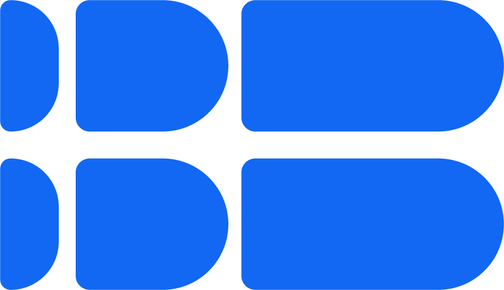
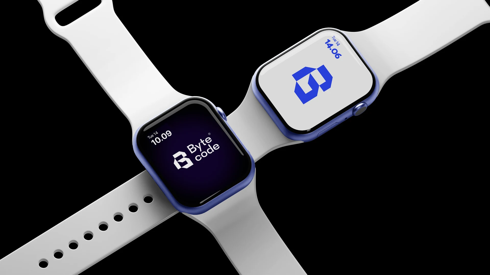
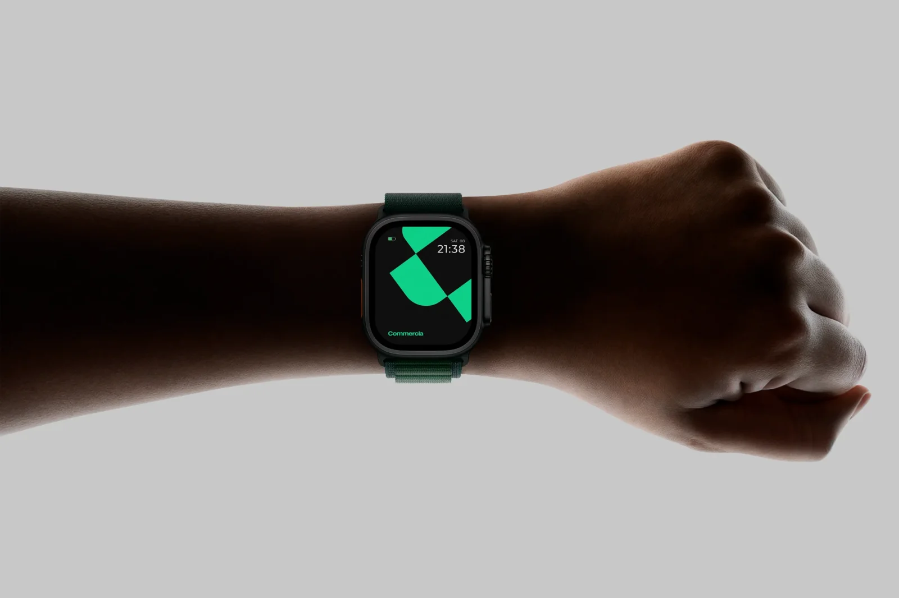

Bio de marcação. Espaço para a trajetória, especialidade e o que Bruno traz para a BoldBrands.
 Vamos conversar?Bruno LealDiretor de Criação / Sucesso do Cliente
↗
Vamos conversar?Bruno LealDiretor de Criação / Sucesso do Cliente
↗
Consultoria de marca · Est. 2026
Somos a BoldBrands, especialistas em construir marcas. Acreditamos que diferenciação não é apenas uma escolha criativa, mas uma decisão de negócio. Combinamos visão empresarial, estratégia, design e soluções de IA para construir marcas mais relevantes, distintas e valiosas.
Nossa tese
Acreditamos que diferenciação não é apenas uma decisão criativa, mas uma decisão de negócio. Combinamos visão empresarial, estratégia, design e soluções de IA para construir marcas mais relevantes, distintas e valiosas.

O que fazemos Quatro frentes.Definimos o espaço que sua marca pode ocupar no mercado, construindo posicionamentos claros, relevantes e capazes de sustentar diferenciação e valor.
Detalhes ↗Transformamos estratégia em expressão, criando identidades visuais distintas e sistemas de marca consistentes em todos os pontos de contato.
Detalhes ↗Conectamos marca, comunicação e crescimento para transformar posicionamento em campanhas, experiências e resultados para o negócio.
Detalhes ↗Criamos soluções que integram tecnologia e inteligência artificial ao marketing para ampliar criatividade, eficiência e escala.
Detalhes ↗Diferente de uma consultoria, vamos do estratégico ao tático. Diferente de uma agência, trabalhamos ao seu lado, construindo a sua marca para que ela seja Bold.
Contate-nos ↗Ouvir · Passo 1
Antes de criar, perguntamos. Entendemos o que sua empresa faz, por que faz e para quem, e onde está a diferença que o mercado ainda não enxerga. Imersão inicial, análise interna e externa, posicionamento e estratégia de marca. O resultado é uma base clara para decidir melhor, vender com mais valor e crescer com direção.
Saídas

Identificar · Passo 2
Agora a estratégia ganha forma. Logotipo, cor, tipografia, imagem e voz: todo o DNA visual e verbal da sua marca, construído para diferenciá-la, ser reconhecida em segundos e continuar funcionando daqui a cinco anos. Uma identidade que atrai os clientes certos, sustenta o valor do seu preço e alinha o seu time.
Saídas
Construir · Passo 3
Agora a marca vai para o mundo. Site, materiais impressos, embalagens, eventos, redes sociais, filmes e campanhas: cada ponto de contato com o seu cliente, integrado e contando a mesma história. Traduzimos a estratégia em ações de marketing que geram demanda e resultados que dá para medir.
Saídas

Acelerar · Passo 4
IA aplicada à sua marca e aos seus processos de marketing. Criamos soluções que otimizam rotinas e aceleram a produção de materiais always on (aquele job semanal, sabe?), reduzindo custo e mantendo a consistência da marca. Seu time produz mais, com a mesma qualidade e sem perder a identidade.
Saídas
Pessoas de negócio que sabem construir marcas. Vimos de dentro de empresas, de marketing, vendas, produto e gestão. Por isso enxergamos a marca como decisão de negócio, e não só como estética.
(O que somos)
Uma consultoria de marca que vai do estratégico ao tático.
(Com quem trabalhamos)
Fundadores, CEOs e times de marketing que levam a marca a sério.
(No que acreditamos)
Marca boa muda o jogo do negócio, e a diferença está na execução.
Bio de marcação. Espaço para a trajetória, especialidade e o que Bruno traz para a BoldBrands.

Bio de marcação. Espaço para a trajetória, especialidade e o que Eduardo traz para a BoldBrands.

Bio de marcação. Espaço para a trajetória, especialidade e o que Felipe traz para a BoldBrands.
Em escopo, pouca coisa: também fazemos estratégia, identidade e experiência de marca. A diferença está em como trabalhamos. Sentamos ao seu lado e vamos até o fim, da primeira conversa à marca funcionando no mercado, em vez de entregar um diagnóstico que fica na gaveta. E se a sua ideia não for boa, vamos dizer. Com jeito, para você continuar gostando da gente.
Para quem percebeu que o jeito antigo parou de funcionar. Fundadores que precisam de mais visibilidade, empresas em crescimento, fusão ou reestruturação, marcas com logotipo de 2003 e discurso de 2008. Se você foi concordando com a cabeça enquanto lia isso, provavelmente é para você.
Definimos quais ferramentas fazem sentido para a sua realidade, em vez de empurrar uma solução pronta. Depois criamos automações sob medida para os desafios do seu marketing: rotinas que consomem tempo, produção recorrente de materiais, fluxos de conteúdo. O resultado é um time que produz mais, gasta menos e mantém a identidade da marca.
Trabalhamos lado a lado com o seu time atual, seja ele de uma ou de dez pessoas. Ajudamos a criar campanhas e ações, e a conectar o marketing ao time de vendas. O foco é sempre resultado que dá para medir, não volume de entregas.
Depende do ponto de partida. A base de uma marca costuma levar de 8 a 12 semanas. Uma transformação completa, com a experiência de marca incluída, leva de 4 a 6 meses, ou mais quando envolve diretoria e conselho. Na primeira reunião definimos juntos um prazo realista.
Mais do que um logotipo de freelancer, menos do que um carro novo para a empresa. Uma base de marca sólida começa na casa dos cinco dígitos, e uma transformação completa pode chegar ao dobro disso. Cada proposta é montada do zero, a partir da sua necessidade. Sem pacote fechado e sem custo escondido.
Ótimo, é para isso que existimos. A maioria dos clientes chega com uma intuição, não com um plano. Nós ouvimos, perguntamos, organizamos as ideias e, no fim, você sabe o que quer. Às vezes é algo bem diferente do que imaginava.
Com uma conversa. Escreva para a gente e conte, em poucas linhas, o que você quer construir. Respondemos em até um dia útil. Se houver sintonia, enviamos uma proposta. Se não houver, indicamos alguém mais adequado para você.